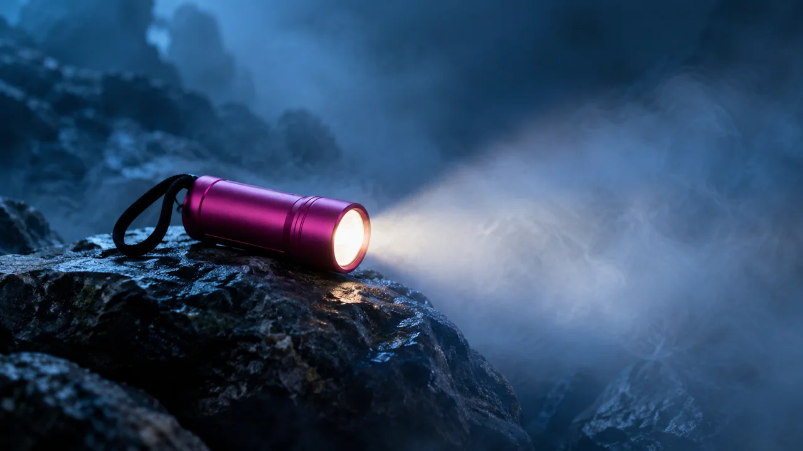
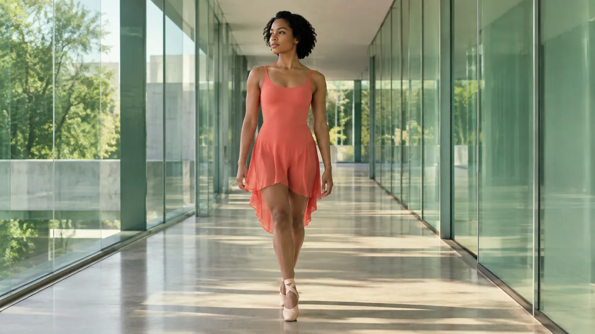
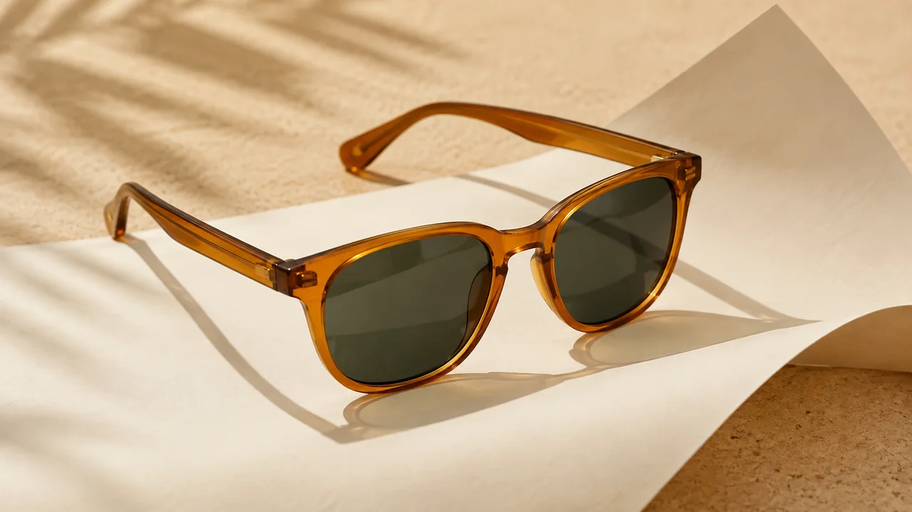
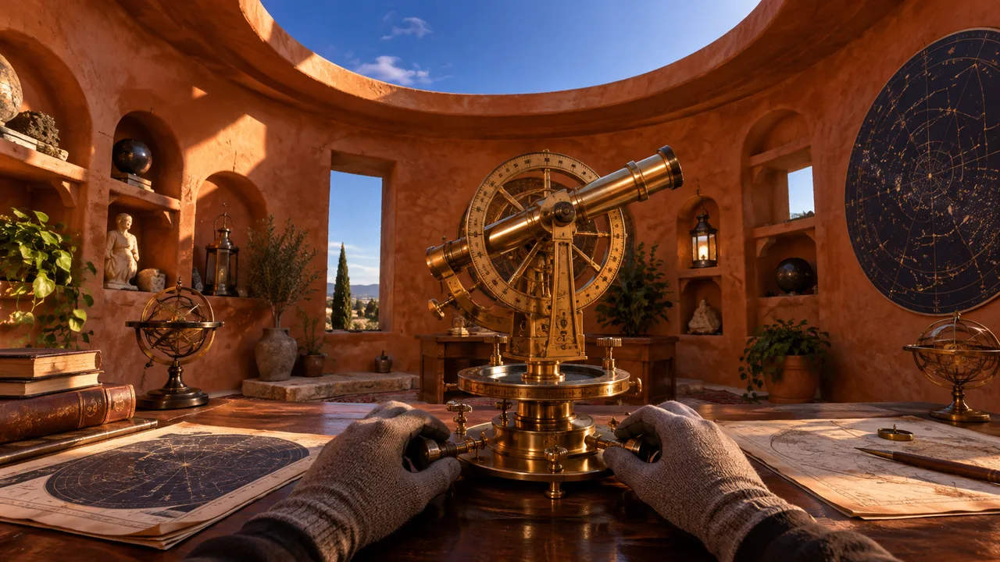

1. Produto na penumbra · 0–2 s
Imagem: Lanterna inteira sobre pedra escura; contorno magenta visível, espaço para texto no editor.
Movimento: Câmera fixa; névoa leve.
Conferência: O produto pode ser reconhecido pelo contorno.
← voltar ao curso · referências didáticas
Seis casos originais para estudar roteiro, continuidade e montagem. As imagens são referências didáticas criadas no Codex. Não há seis campanhas renderizadas neste kit. Os exercícios pedem que você produza e confira seus próprios arquivos.
Salvar roteiros, referências e faixa de estudo · Salvar roteiros em texto
Formato dos seis estudos: vertical 9:16, exportação MP4 em 1080 por 1920 quando seus arquivos permitirem. Não amplie material ruim esperando recuperar detalhe. No editor, confira enquadramento e leitura. As referências do curso são horizontais para leitura; gere suas próprias referências no formato planejado.
Acrescente identificação legível de conceito ou demonstração fictícia com IA. Confira custos e recursos na conta antes de gerar. Para a produção completa, reserve 28–40 horas, além de filas. A prática de dez minutos é um recorte da etapa, frequentemente a revisão de arquivos já produzidos.
Ficha fixa: Lanterna cilíndrica magenta, alça preta e uma lente frontal. Pedra escura e ambiente azul. Não representa desempenho real.

Imagem didática do Codex; não é quadro extraído de campanha produzida.
Imagem: Lanterna inteira sobre pedra escura; contorno magenta visível, espaço para texto no editor.
Movimento: Câmera fixa; névoa leve.
Conferência: O produto pode ser reconhecido pelo contorno.
Imagem: Mesma lanterna acesa; feixe suave na névoa azul.
Movimento: A névoa se move sem alterar a lente.
Conferência: Uma lente, uma alça, forma preservada.
Imagem: Mesma lanterna totalmente visível sobre a pedra.
Movimento: Aproximação pequena e lenta.
Conferência: Nenhuma parte desaparece.
Imagem: Detalhe do corpo magenta, mesma proporção e material.
Movimento: Luz varia suavemente; produto parado.
Conferência: Textura não vira letras ou marca.
Imagem: Detalhe da alça preta presa ao corpo, apoio natural.
Movimento: Câmera estável.
Conferência: Alça continua presa e não se multiplica.
Imagem: Produto inteiro na mesma pedra, mais espaço azul ao redor.
Movimento: Névoa passa ao fundo.
Conferência: A escala não muda durante o clipe.
Imagem: Lente e corpo visíveis, brilho controlado.
Movimento: Pequena mudança de luz.
Conferência: Brilho não apaga a forma do produto.
Imagem: Mesma composição principal com produto inteiro.
Movimento: Movimento reduz até parar.
Conferência: Alça, lente e corpo mantidos.
Imagem: Produto inteiro, fundo limpo para frase adicionada no editor.
Movimento: Câmera fixa.
Conferência: Nome e identificação cabem sem cobrir o objeto.
Som: Quando tudo parece igual, uma pausa muda o olhar. Lume: imagine outro caminho. Grave em ritmo natural, ouça e distribua a frase pelos 18 segundos. Não corte palavras para caber.
Pronto: Nove cenas, 18 segundos, produto coerente e voz compreensível. Identificação: conceito fictício com IA.
Ficha fixa: Pessoa adulta de roupa coral, corredor de vidro verde, mesma luz e direção. Quatro clipes editados; não é tomada real única.

Imagem didática do Codex; não é quadro extraído de campanha produzida.
Imagem: Pessoa inteira no começo do corredor, braços relaxados.
Movimento: Começa a caminhar devagar; câmera acompanha.
Conferência: Corpo, roupa e pilares estáveis.
Imagem: Use o último quadro limpo anterior; mesma pessoa alguns passos adiante.
Movimento: Continua na mesma direção.
Conferência: Posição e escala encaixam na passagem.
Imagem: Mesma pessoa atravessa uma faixa de sol no piso.
Movimento: Caminhada pequena, sem giro.
Conferência: Luz pertence ao espaço, não muda a roupa.
Imagem: Mesmo corredor; pessoa encerra o passo.
Movimento: Movimento desacelera até parar.
Conferência: Pés não deslizam e música termina de forma deliberada.
Som: Instrumental do kit ao longo dos 20 segundos. Ouça antes de decidir as emendas. Os intervalos são uma estrutura de estudo, não uma análise de batidas da faixa.
Pronto: Quatro trechos, três emendas conferidas, som contínuo e créditos preservados. Identificação: estudo fictício com IA.
Ficha fixa: Armação âmbar translúcida, duas lentes escuras, ponte e duas hastes. Papel creme. Sem alegações de proteção ou saúde.

Imagem didática do Codex; não é quadro extraído de campanha produzida.
Imagem: Óculos inteiros sobre papel creme, margem para as hastes.
Movimento: Aproximação lenta.
Conferência: Conjunto reconhecível.
Imagem: Mesma armação, dobra de papel em primeiro plano.
Movimento: Dobra se move suavemente.
Conferência: Papel não transforma o produto.
Imagem: Detalhe da armação âmbar e da dobradiça.
Movimento: Câmera quase parada.
Conferência: Material e junções coerentes.
Imagem: Mesma referência, ângulo levemente diferente.
Movimento: Movimento mínimo, sem giro completo.
Conferência: Duas hastes sem atravessar lentes.
Imagem: Produto inteiro com fundo limpo.
Movimento: Câmera fixa.
Conferência: Frase Senda: observe os detalhes legível.
Som: Música autorizada opcional. A peça funciona sem voz. Se usar o trecho do kit, recorte conscientemente para 15 segundos e preserve o crédito.
Pronto: Cinco cenas, 15 segundos, construção coerente e frase legível. Identificação: conceito fictício com IA.
Ficha fixa: Tênis coral, sola creme, cadarços corais; roupa azul marinho e pista azul. Não promete desempenho nem saúde.
Imagem didática do Codex; não é quadro extraído de campanha produzida.
Imagem: Tênis lateral apoiado na pista azul.
Movimento: Câmera fixa ou aproximação pequena.
Conferência: Contato com a pista e solado coerentes.
Imagem: Pessoa adulta parada em pé, braços soltos, roupa azul marinho, calçando a referência.
Movimento: Pequena mudança de peso.
Conferência: Duas pernas, dois pés, equilíbrio.
Imagem: Mesma pessoa e direção, espaço para avançar um pé.
Movimento: Um passo curto e apoio na pista.
Conferência: Pé não atravessa chão; corpo não se multiplica.
Som: Três batidas leves gravadas por você podem marcar a edição. São um recurso de ritmo, não um registro cardíaco. Alternativa: primeiro montar em silêncio.
Pronto: Três cenas, 12 segundos, apoio e anatomia conferidos. Identificação: conceito fictício com IA.
Ficha fixa: Quatro referências: sala terracota, instrumento astronômico de latão, luvas cinza e luz do teto circular. Não representa local existente.

Imagem didática do Codex; não é quadro extraído de campanha produzida.
Imagem: Visão da entrada para a mesa; luz da abertura circular.
Movimento: Avanço lento.
Conferência: Mesa e teto correspondem ao mapa.
Imagem: Mesma sala, mesa mais próxima; objeto permanece no centro da ação.
Movimento: Avanço pequeno, sem atravessar mesa.
Conferência: Aproximação coerente com a escala.
Imagem: Instrumento de latão próximo; luvas na base do quadro.
Movimento: Mãos estáveis; leve ajuste do olhar.
Conferência: Mãos e objeto sem deformação.
Imagem: Mesmo ponto de vista, instrumento e sala reconhecíveis.
Movimento: Movimento termina com calma.
Conferência: Portas, teto e mesa permanecem no lugar.
Som: Som ambiente próprio ou autorizado, discreto. Pode começar em silêncio para conferir o espaço. Música e susto não são obrigatórios.
Pronto: Quatro cenas, 16 segundos, três passagens espaciais conferidas. Identificação: universo fictício com IA.
Ficha fixa: Jo: pele morena, cabelo preto curto, blusa creme. Bolsa retangular de lona oliva com duas alças creme. Personagem e produto fictícios.
Imagem didática do Codex; não é quadro extraído de campanha produzida.
Imagem: Jo de meio corpo segurando a bolsa inteira.
Movimento: Fala curta, gestos mínimos.
Conferência: Veja o formato. Boca e voz conferidas, ou narração identificada.
Imagem: Bolsa inteira, mesma referência.
Movimento: Câmera fixa.
Conferência: A bolsa por inteiro. Forma retangular preservada.
Imagem: Detalhe das alças creme presas ao corpo da bolsa.
Movimento: Mão segura sem torcer.
Conferência: Observe as alças. Mão e tecido não se fundem.
Imagem: Detalhe da lona oliva.
Movimento: Aproximação pequena.
Conferência: Detalhe do tecido. Textura não muda de material.
Imagem: Bolsa aberta, sem alegação de capacidade ou objetos surgindo.
Movimento: Movimento mínimo.
Conferência: Veja a abertura. Bordas e alças coerentes.
Imagem: Jo e bolsa inteiras no enquadramento de meio corpo.
Movimento: Pose simples.
Conferência: Compare o conjunto. Rosto, roupa e produto preservados.
Imagem: Produto visível e espaço para identificação.
Movimento: Câmera fixa.
Conferência: Conheça o conceito Dobra. Frase inteira e legível.
Som: Use as sete frases curtas indicadas, com pausas. Voz própria ou sintética permitida. Narração sobre detalhes reduz a necessidade de sincronização. Não invente experiência de compra.
Pronto: Sete cenas, 21 segundos, fala, personagem e bolsa coerentes. Identificação visível: Demonstração fictícia com IA.
Carefree — Kevin MacLeod (incompetech.com). Licença CC BY 4.0: https://creativecommons.org/licenses/by/4.0/. Trecho inicial de 20 segundos, convertido para MP3. Fonte: https://incompetech.com/music/royalty-free/index.html?gt=&isrc=USUAN1400037. Obtido pelo INEMAVOX em 25/09/2026. Se alterar volume, duração ou aplicar fades, acrescente essa informação ao crédito.
CASO: CENA: ARQUIVO E TENTATIVA: REFERÊNCIA USADA: PEDIDO: SITUAÇÃO: aprovado / corrigir / pendente TEMPO DO PROBLEMA: O QUE OBSERVEI: ALTERAÇÃO A TESTAR: TRABALHO ATIVO: medido / estimado / não medido ESPERA DE PROCESSAMENTO: TENTATIVAS E CONSUMO CONHECIDO: LIMITE E ALTERNATIVA:
CASO ESCOLHIDO: PÚBLICO: MENSAGEM: FORMATO: DURAÇÃO E CENAS: ARQUIVOS ESPERADOS: CRITÉRIOS: sequência / identidade / som / leitura / identificação VERSÃO ANTERIOR: VERSÃO REVISADA: MUDANÇA E EFEITO OBSERVADO: DECISÃO: ÍNDICE DOS SEIS ESTUDOS: Lume — 18s — arquivo e situação: Vento — 20s — arquivo e situação: Senda — 15s — arquivo e situação: Pulso — 12s — arquivo e situação: Arquivo do Vento — 16s — arquivo e situação: Dobra — 21s — arquivo e situação: ACABAMENTO FINAL — arquivo e situação: FONTES E CRÉDITOS: PENDÊNCIAS REAIS: